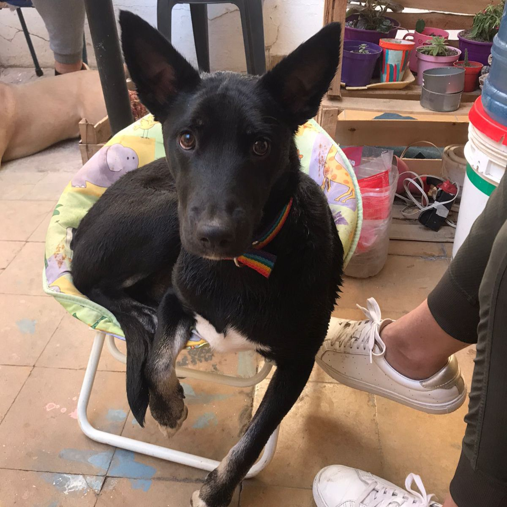
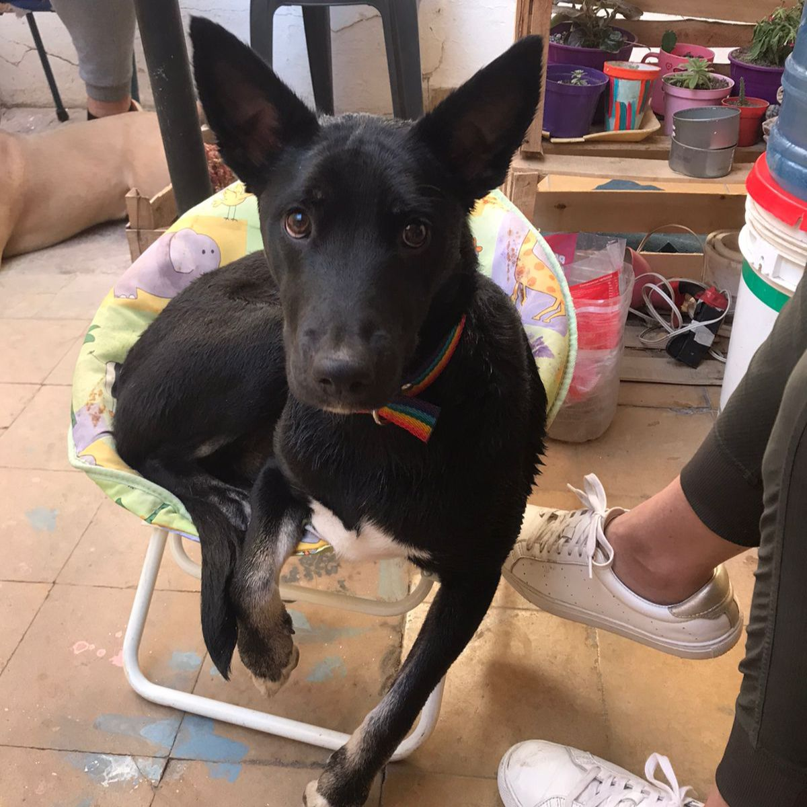

Aspectos a tener en cuenta al adoptar un cachorro
Incorporar un perro cachorro en adopción en tu vida es un hecho importante que va a modificar tu día a día durante muchos años, por lo es imprescindible que actúes con responsabilidad, y sospeses la idea teniendo muy en cuenta los pros y los contras. Piensa que, la mayoría de los perros que son abandonados y acogidos por refugios o protectoras de perros, son fruto de una decisión impulsiva y poco meditada por parte de sus propietarios, que ven alterada su vida cuando ya es demasiado tarde. Los perros, a diferencia de los gatos, suelen ser mascotas extremadamente dependientes. Buscan el apego emocional constante, y requieren de la atención humana para desarrollar sus principales rutinas. Si tu nivel de implicación no se adecúa a sus necesidades, tu perro podrá sentirse triste y frustrado, llegando incluso a desarrollar actitudes depresivas. Cuando la decisión de adoptar un perro va asociada a la adquisición de un cachorro las consecuencias pueden ser aún peores, ya que deberás invertir grandes dosis de tiempo y paciencia durante sus primeros meses de vida.
 

Ellos forman parte del refugio tambien!, Siempre tenemos en adopcion perros y gatos, que los acostumbramos a convivir de manera armoniosa con otras especies. Recuerda que no solo hay gatos y perros cahorros, si no tambien adultos, ellos tambien buscan un hogar y una familia que les de amor!